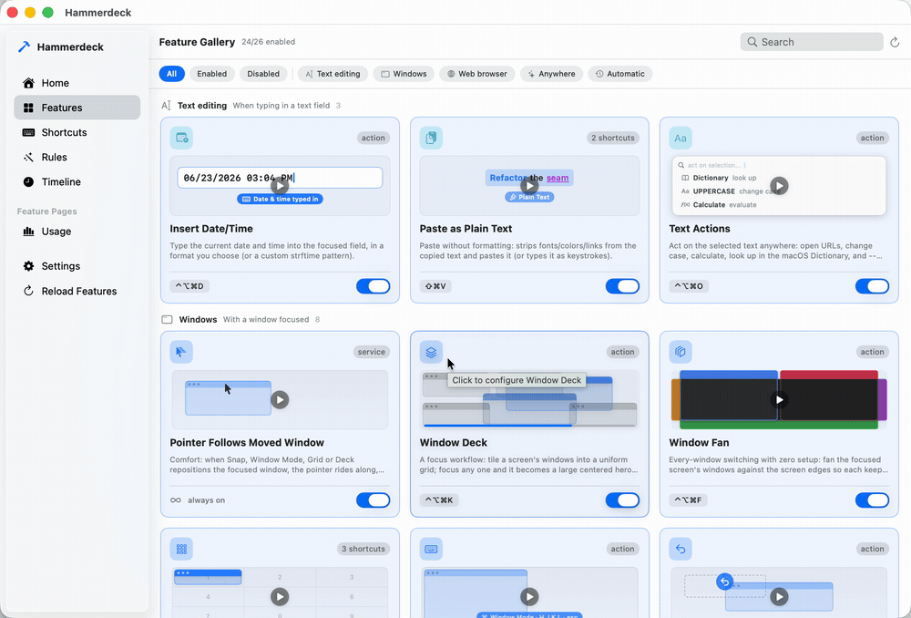
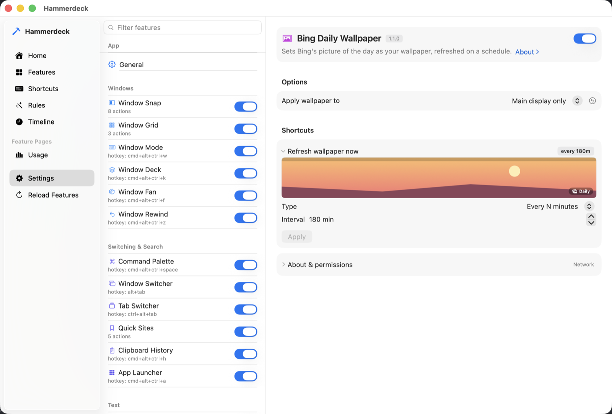

Big screens, many screens, no dragging. Every window arrangement on a key — and a Mac that rebuilds the layout by itself when your displays change.
Open the disk image and drag Hammerdeck to Applications. Running it from the image works, but it cannot update itself from there.
Or with Homebrew: brew install --cask kouxing2000/tap/hammerdeck
A grid on one key — name two cells and the window spans them. Throw a window to the next display, or swap the two displays entirely: macOS has no shortcut for either, at any version. Plus a deck that keeps every window reachable, and one-key undo.
A rules engine watches the Mac itself: connect a monitor and your windows arrange themselves — no scripting, just a switch and a trigger picker. Actions that need your live window stay on hotkeys and chords, by design.
Confirmation of what fired, a note about what ran while you were away, and plain local log files you can read. Nothing leaves your Mac: no cloud, no account, no subscription.

macOS tiles in halves and quarters. That is the right answer on a laptop and the wrong one on a 49-inch ultrawide — and across two or three displays there is no keyboard shortcut at all, at any macOS version, to send a window to the other display or to swap what sits on each.
Hammerdeck puts all of it on keys: grids (name two cells, the window spans them),
throws and swaps between displays, a deck that keeps every window reachable, a
modal layer for arranging by feel, and one-key undo for any of it — each on a
hotkey or a chord (cmd+shift+a, then b). Actions that need no
context — refresh the wallpaper, open a set of tabs — also take a schedule
or a system event.
It is a native Swift app with a Lua engine inside — think a focused, miniature Hammerspoon — except you never write Lua. Every feature is a switch, some options, and a trigger picker.
A feature ships off unless its row says on by default — those work from a fresh install. Switch on whatever else you want in Settings and bind it to any trigger.
Move the focused window from the keyboard: throw it to the next display and the pointer rides along, snap to a half, toggle maximize/75%, or land on a rectangle you saved — plus a one-shot swap of two displays' windows. No macOS version through 26 has a display-move shortcut; beyond Sequoia's halves and quarters this adds the 75% toggle, your own placements, and undo through Window Rewind — from macOS 13.
Precise placement: put the focused window into a grid cell — or a rectangle spanning several. A hotkey deems the screen a grid (Hyper+9 = 3×3, Hyper+4 = 2×2, Hyper+6 = a 6-cell grid that orients to the screen — 3×2 wide, 2×3 tall); press a cell to land there, or a second cell down-right of it to fill that rectangle.
Fine control, one key at a time: a modal keyboard layer for move/resize/corners/center/undo, live until Escape. For arranging by feel without spending a global hotkey on every arrangement.
A focus workflow: tile a screen's windows into a uniform grid; focus any one and it becomes a large centered hero, the rest peeking behind. ⌥Esc drops the hero, then exits.
Every-window switching with zero setup: fan the focused screen's windows against the screen edges so each keeps a full, always-visible edge no other window can cover. Click any one to switch. Turn the rearranging off and nothing on screen moves — the borders, the list and the switching stay. With it on, the fan declines to run when a screen holds more windows than it can honestly fit, and says how many that is.
Undo for any window move: one hotkey (Hyper+Z) restores every window a snap, screen-swap, grid, or deck move just repositioned, and returns the pointer with them. Single-step — it rewinds the most recent change.
Comfort: when Snap, Window Mode or Grid repositions the focused window, the pointer rides along, keeping its place inside it. Multi-window layouts — Deck, Fan, and rules — deliberately leave the pointer where it is.
When you fire a feature with a hotkey or chord, briefly flash which action ran — a quiet, single-slot chip (glyph + name, top-center) that fades on its own. Confirms the press registered and, if you reached for the wrong shortcut, shows what you actually triggered. Automated triggers use the separate notification instead.
Show a brief on-screen notification naming a feature when one of its actions fires from an AUTOMATED trigger — a schedule or a system event (sleep/wake/screen lock/...). Lets you see what ran while you were away. Manual shortcuts (hotkeys, chords) and menubar runs never notify — you started those yourself.
Tracks wake/sleep sessions and per-app focus time to daily CSV files (idle time excluded), with an optional desktop widget.
Reaches: reads browser tabs, reads/writes files.Fuzzy-search and run any action of any enabled feature from one keystroke.
Reaches: runs other features.Searchable Alt-Tab: switch windows across all apps, most recently used first.
Searchable switcher across all Chrome + Safari tabs, most recently used first, with favicons.
Reaches: reads browser tabs, network, reads/writes files.Jump to a favorite site — focuses its tab if it's already open, opens it if not. Per site, pick the browser, a Chrome profile, and whether it opens as a standalone app window, a fresh private window, or both. cmd+<number> jumps straight to a row in the picker, and every site is also a menubar row you can give its own shortcut.
Reaches: reads browser tabs, network, reads/writes files.Keeps a searchable history of copied text; pick an entry to paste it. Password-manager entries are never recorded.
Reaches: types keystrokes, reads/writes files.Launch or focus any installed app from a searchable panel — found by a plain disk scan, never Spotlight indexing.
Reaches: sees installed apps.Type the current date and time into the focused field, in a format you choose (or a custom strftime pattern).
Reaches: types keystrokes.Paste without formatting: strips fonts/colors/links from the copied text and pastes it (or types it as keystrokes).
Reaches: types keystrokes.Act on the selected text anywhere: open URLs, change case, calculate, look up in the macOS Dictionary, and — with an OpenAI key — refine/translate/summarize via AI. Results paste back in place.
Reaches: types keystrokes, network.Reminds you to rest your eyes after a work interval; idle-aware, with daily work-time stats.
Reaches: sleep/lock.Forces system sleep at a set time, with graduated warnings, a one-time snooze, and a weekend shift.
Reaches: sleep/lock.Turns the display off after a period of no activity, with a countdown warning on every screen first. Stands down while video, a call or a presentation is holding the display awake.
Reaches: sleep/lock.Ask for minutes, then run a thin progress strip along the bottom of the screen; notifies when time is up.
Generate a strong random password and copy it to the clipboard.
On-demand pointer helpers — flash a crosshair to find the mouse, or center it on the focused window or a screen.
Sets Bing's picture of the day as your wallpaper, refreshed on a schedule.
Reaches: network.Beyond the catalog, the rules engine wires features together — built in Settings, no code. A rule pairs a signal (frontmost app, displays connected, an app launches or quits, light/dark appearance, power source) with effects: move windows to a saved layout, run any feature's action, set the wallpaper, lock the screen, launch or quit an app, or chain several together. Where the built-in effects end, a rule can run any macOS Shortcut — the escape hatch to everything else.
Options and triggers are generated from the feature's own declaration — there is no per-feature settings code, and no config file to hand-edit. Any action can be driven by a hotkey, a chord, a schedule, or a system event.

Every shortcut press flashes which action fired, automated runs can tell you what happened while you were away, one hotkey rewinds the last window rearrangement, and every decision lands in a local, plain-text log.
Many features run with no macOS permission at all. The ones that need one:
Nothing is requested at install. First launch explains why the window features need Accessibility and offers a button to grant it; most others ask when you switch them on or first use them, and a feature you never enable never asks. Full Disk Access is the exception: macOS never asks for it, so you grant it yourself if you want the Empty the Trash rule. If a feature does nothing, the pinned permission gotchas issue covers the known causes. Every feature also declares what it may reach — the “Reaches” notes in the catalog above — and the app withholds anything undeclared at run time.
Point Settings › General at a folder and every
<id>/lua/init.lua inside it loads next to the built-ins: the
same manifest contract, the same scoped API, the same capability gate. A broken
one shows as a red row — it never takes the app down — and Reload picks
up your edits without a relaunch.
Switch it on and Hammerdeck serves a local, token-guarded MCP endpoint on the loopback interface, so a coding agent can inspect the catalog, see exactly which API a feature is handed, reload after an edit, read the load error, and test-fire what it wrote. The authoring guide exports as a ready-to-use agent skill.
It is off until you turn it on and reachable only from this machine. This is
auditability rather than a sandbox: an extension is code you chose to run, and the
point is that its reach is written down and machine-checked —
validate_extension compares the declaration against what the code
actually calls, in both directions. There is no tool for running arbitrary Lua, and
the widest declaration, exec, says in as many words that a program can do
whatever you can.
Download the disk image, open it, and drag Hammerdeck to Applications — if you run it from somewhere else it offers to move itself on first launch. A hammer icon appears in the menubar; Settings… opens the config window. First run starts with the window suite on — the features marked on by default above — and explains the Accessibility ask before macOS shows it. Everything else stays off until you switch it on.
Or install it with Homebrew. It still updates itself, so brew upgrade leaves it alone:
brew install --cask kouxing2000/tap/hammerdeckOr build it from source (Xcode 16 or later; on macOS 14 also brew install jq):
git clone https://github.com/kouxing2000/hammerdeck.git
cd hammerdeck
scripts/app.sh start{kind=link}
{kind=link}